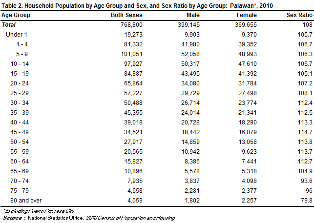

Pre-colonial Period: Before Spanish arrival, Palawan was home to indigenous groups like the Tagbanua and Palaw'an, who lived off fishing and farming.
Spanish Rule: Spaniards came in the 16th century but had limited influence due to Palawan's remoteness and local resistance.
American Influence: After the Spanish-American War, Palawan fell under American control, seeing some infrastructure development.
World War II: Japanese occupation saw military installations and the tragic Palawan Massacre of American POWs.
Independence: Post-independence, Palawan became a regular province in 1978 after being separated from Mindoro.
Tourism Boom: Recent years have seen Palawan become a tourist hotspot, balancing development with environmental conservation efforts.
GEOGRAPHY:
Islands: Palawan is an archipelago consisting of approximately 1,780 islands and islets, with the main island being the largest and most populous.
Topography: Its terrain varies from rugged limestone formations and lush rainforests to mangrove swamps and pristine beaches, with an irregular coastline dotted with bays and coves.
Mountains: The interior is dominated by mountain ranges, with Mount Mantalingahan as the highest peak at around 2,085 meters above sea level, covered in dense forests.
Underground River: The Puerto Princesa Underground River, a UNESCO World Heritage Site, winds through limestone caves for about 8.2 kilometers.
Marine Life: Surrounding coral reefs teem with diverse marine species, including dugongs and sea turtles, with the Tubbataha Reefs Natural Park as a renowned diving spot.
Island Destinations: El Nido, Coron, and the Bacuit Archipelago attract tourists for their stunning landscapes and recreational activities like diving and snorkeling.
Biodiversity: Palawan's biogeographic significance lies in its unique species like the Palawan peacock-pheasant and high endemism in flora and fauna.
Climate: The island experiences a tropical climate with a dry season from November to April and a wet season from May to October, occasionally affected by typhoons.
DEMOGRAPHICS:

ECONOMY:
Tourism: Palawan's economy thrives on tourism, with attractions like the Puerto Princesa Subterranean River National Park, El Nido, and Coron drawing both domestic and international tourists.
Agriculture: Farming is significant, with rice, coconut, and cashew nuts being primary crops. Fishing also contributes to the agricultural sector.
Fisheries: The coastal waters support a thriving fishing industry, supplying seafood to local markets and for export.
Mining: Nickel mining is prominent in Palawan, contributing to the local economy. However, it raises environmental concerns.
Trade and Commerce: Puerto Princesa serves as the economic hub, supporting various businesses with its markets and commercial sector.
Energy: Renewable energy projects like hydropower and solar farms contribute to the local energy supply.
Infrastructure: Efforts are ongoing to improve infrastructure, including roads, ports, and airports, to support tourism and economic growth.